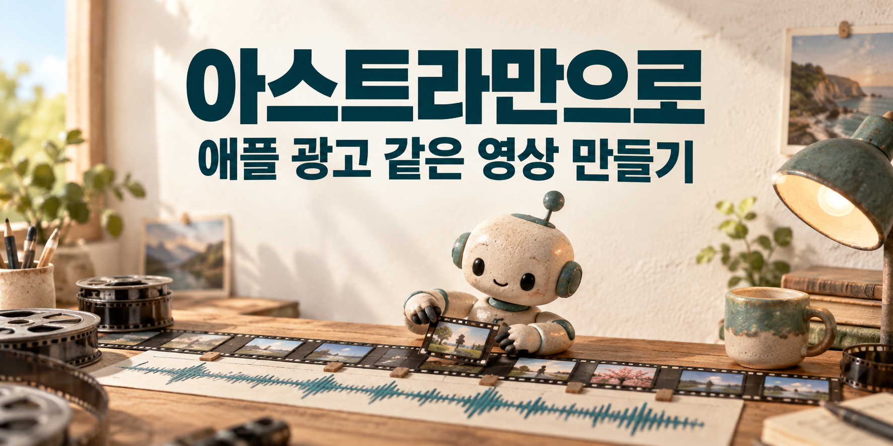

아스트라만으로 애플 광고 같은 영상을 만들었다
애플 광고처럼 음악에 맞춰 글자가 움직이는 영상을 만들고 싶었다. 원하는 느낌을 대략 설명하고 AI 모델 아스트라에 맡겼더니, 글자가 움직이는 화면부터 배경음악까지 들어간 3분 36초 영상이 나왔다. 첫 영상은 아스트라만으로 만들었다. 이후 음악이 아쉬워 음악을 만들 수 있는 플로우에서 새 곡을 만들었고, 그 음악에 맞춰 약 2분 42초짜리 두 번째 영상으로 다듬었다.

처음에는 영상도 음악도 아스트라에 맡겼다
출발은 상세한 편집 설명서가 아니라 대략적인 아이디어였다. 애플 광고에서 본 빠른 글자 전환을 참고해, 대한민국의 여러 순간을 담은 영상을 만들고 싶었다. 글자가 언제 커지고 어디로 움직일지, 몇 초에 다음 장면으로 넘어갈지를 처음부터 하나하나 정해서 주지는 않았다.
먼저 나온 결과가 아래 영상이다. 한국전쟁부터 산업의 변화, 민주화, 스포츠와 문화까지 사건 31개를 담았다. 사진이나 배우의 연기 대신, 한글 문구와 도형이 나타나고 커지고 흩어지면서 이야기를 전한다. 이런 식으로 글자에 움직임을 주는 표현을 ‘키네틱 타이포그래피’라고 한다. 쉽게 말하면 글자가 영상의 주인공이 되는 것이다.
이 첫 버전에는 소리도 들어 있다. 다만 전문 음악 서비스에서 만든 완성곡을 가져온 것은 아니다. AI가 작성한 프로그램에서 북을 치는 듯한 소리와 낮은 음 등을 합쳐, 화면을 넘기는 박자에 맞는 간단한 음악을 만들었다. 덕분에 음악을 따로 준비하지 않은 상태에서도 소리와 화면이 함께 움직이는 영상을 볼 수 있었다.
여기서 ‘아스트라만으로’라는 말은 첫 영상을 만들 때 별도의 음악 생성 서비스에서 곡을 준비하지 않았다는 뜻이다. 실제 파일을 만드는 과정에서는 아스트라가 작성한 코드와 영상 처리 프로그램이 쓰였다. 내가 채팅으로 방향을 주면 AI가 그 작업을 이어서 처리하는 방식이었다.
참고한 애플 영상도 함께 보면 차이가 보인다
참고한 작품은 애플의 「Don’t Blink」다. 짧은 문구가 음악과 함께 빠르게 바뀌고, 중요한 단어는 크게 튀어나온다. 아래는 GwangJin Seo가 한국어로 옮긴 영상이다.
출처: GwangJin Seo의 한국어 번역판. 번역 제작자가 공개한 플레이어를 연결했다. 원작 제작진 Sam Oliver의 작품 소개에서도 원작을 볼 수 있다.
내 영상에는 애플 제품 사진이나 광고의 음악을 넣지 않았다. 참고한 것은 글자를 보여주는 방식이다. 문장을 짧게 나누고, 특정 단어를 크게 보여주고, 소리가 강조되는 순간에 화면을 바꾸는 방법을 가져와 대한민국의 이야기로 새로 구성했다.
글자가 빠르게 움직이는 영상은 겉으로는 단순해 보인다. 하지만 직접 만들려면 단어 하나가 나타나는 시간부터 다음 단어로 바뀌는 시간까지 정해야 한다. 음악은 이미 다음 박자로 갔는데 글자가 늦게 나오면 힘이 빠지고, 너무 빨리 넘기면 읽기도 전에 사라진다. 아스트라에 맡긴 일은 이런 시간을 정하고 실제 영상 파일로 만드는 작업까지 포함했다.
예를 들어 ‘4강’이라는 두 글자를 보여주는 데도 여러 선택이 필요하다. 작게 시작해 크게 키울지, 바로 큰 글자로 띄울지, 몇 초 동안 남길지에 따라 느낌이 달라진다. 이런 선택이 영상 전체에 이어진다. 대략적인 느낌을 말로 전한 뒤 실제로 움직이는 결과를 받아보면, 머릿속에 있던 생각과 무엇이 다른지 짚어가며 고칠 수 있다.
영상은 나왔지만, 음악은 더 바꾸고 싶었다
첫 영상을 보고 아쉬웠던 것은 음악이었다. 화면과 박자를 확인하기에는 쓸 수 있었지만, 내가 원하는 벅찬 느낌을 내기에는 부족하게 느껴졌다. 그래서 영상은 유지하면서 음악을 바꾸기로 했다. 플로우에서 새 음악을 만들고, 그 파일을 아스트라에 주어 다시 편집했다.
곡만 갈아 끼우면 끝나는 일이 아니다. 음악이 바뀌면 강하게 울리는 순간도, 조용해지는 부분도 달라진다. 예전 음악에 맞춰 바뀌던 글자를 그대로 두면 새 음악과 어긋난다. 이번에는 새 곡을 기준으로 글자가 등장하고 사라지는 시간을 다시 잡았다.
그 결과 길이는 3분 36초에서 약 2분 42초로 줄었다. 사건 31개는 그대로 남겼다. 같은 내용을 더 짧은 곡 안에 담으면서, 빨리 넘길 부분과 오래 보여줄 부분을 다시 나눈 것이다. 노래를 빠르게 재생해서 길이를 줄인 것은 아니다. 새 음악은 원래 속도로 사용했다.
음악이 ‘탁’ 울릴 때 글자가 바뀌게 했다
‘영상과 음악의 싱크를 맞춘다’는 말을 장면으로 풀면 이렇다. 음악에서 ‘탁’ 하는 소리가 나는 순간, 화면의 문구도 다음 문구로 바뀐다. 소리가 커질 때 글자가 함께 커지면 같은 장면도 더 강하게 느껴진다. 이번 수정에서는 음악 파일을 분석해 소리가 두드러지는 지점을 찾고, 그 근처에 문구 전환 시간을 맞췄다.
모든 장면을 똑같이 빠르게 넘기지는 않았다. 월드컵 부분에서는 ‘16강’, ‘8강’, ‘4강’, ‘대한민국’으로 이어지는 장면에 약 12초를 썼다. 뒤쪽의 태안 자원봉사와 김연아 장면은 음악이 잦아드는 구간에 놓았다. 마지막에는 음악의 여운과 함께 끝 문장을 볼 시간이 남도록 했다.
두 영상을 비교할 때는 음악만 듣기보다 글자가 바뀌는 순간을 함께 보면 좋다. 첫 버전의 월드컵 장면은 약 2분 2초부터, 두 번째는 약 1분 22초부터 나온다. 같은 사건과 문구라도 음악과 전환 시간이 달라지면 어떻게 느껴지는지 직접 비교할 수 있다.
이런 수정에서 중요한 것은 빨리 만드는 능력만이 아니다. “전체를 줄여줘”라고만 하면 내가 좋아한 장면까지 너무 짧아질 수 있다. 그래서 사건 수처럼 유지할 내용과, 월드컵처럼 더 강조할 부분을 함께 정했다. 음악 길이에 맞추면서도 내가 남기고 싶었던 장면은 살리는 방식이다.
첫 영상에서 음악을 바꾼 영상까지
처음에는 아스트라로, 그다음에는 음악을 바꿨다
아스트라에 맡겨 만든 3분 36초 영상. 사건 31개를 글자와 도형으로 표현했다.
첫 음악이 아쉬워 플로우에서 새 곡을 만들고 아스트라에 전달했다.
사건 31개는 유지했다. 음악의 타격음에 문구 전환을 맞춰 약 2분 42초로 다듬었다.
처음부터 완벽한 프롬프트를 쓸 필요는 없었다
프롬프트는 AI에게 일을 부탁하는 글이다. 이번에도 처음부터 모든 편집 시간을 적어서 시작한 것이 아니라 원하는 분위기를 먼저 전달했다. 나온 영상을 보고 “이 음악은 아쉽다”, “이 장면은 더 오래 보여주고 싶다”처럼 고칠 곳을 좁혀 갔다. 결과물이 생기니 다음에 무엇을 요청할지도 더 분명해졌다.
비슷한 작업을 해보고 싶다면, 처음에는 영상의 주제와 참고할 표현 방식부터 말하면 된다. 회사 소개라면 회사가 해온 일, 가족 영상이라면 남기고 싶은 순간을 적는다. 장면에 넣을 사실과 이름은 직접 확인해서 주면 좋다. 아래 문장은 실제 대화의 인용이 아니라, 이번 과정을 바탕으로 새로 쓴 요청 예시다.
처음 부탁할 때의 예시
첨부한 영상을 참고해서, 글자가 음악에 맞춰 나타나고 커지는 영상을 만들어줘. 주제는 대한민국의 여러 역사적 순간이야. 중요한 단어는 크게 보여주고, 감동적인 장면은 읽을 시간을 줘. 영상과 배경음악까지 먼저 만들어서 내가 볼 수 있게 해줘.
처음 나온 영상에서는 완성도를 한꺼번에 평가하기보다 고치고 싶은 부분을 찾는 편이 구체적이다. 음악이 마음에 드는지, 글자를 읽을 시간이 충분한지, 꼭 넣고 싶었던 내용이 빠지지는 않았는지 살펴보는 것이다. 이번에는 그중 음악을 바꾸고, 새 곡에 맞춰 화면 전환을 조정하는 데 집중했다.
음악을 바꾼 뒤 부탁할 때의 예시
이 새 음악으로 다시 맞춰줘. 사건 31개는 그대로 두고 음악 속도는 바꾸지 마. 강한 타격음이 날 때 글자가 바뀌게 해줘. 월드컵 4강 부분은 약 12초로 강조하고, 조용한 장면과 마지막 문장은 읽을 시간을 남겨줘.
수정 요청을 이렇게 쓰면 무엇을 바꿀지와 무엇을 지킬지가 함께 전달된다. ‘멋있게 해줘’라는 말에 더해, 같은 내용은 남기고 음악에 맞는 시간만 다시 잡아달라고 설명하는 것이다. 영상 편집의 전문용어를 모두 알아야만 할 수 있는 요청은 아니다.
다음에 문구 하나를 바꾸고 싶을 때도 마찬가지다. 어느 장면의 어떤 말을 바꿀지 알려주면 수정 범위가 분명해진다. 반대로 영상 전체가 너무 급하게 느껴진다면, 읽을 시간을 더 달라는 요청이 필요하다. 글자 내용의 문제인지, 보여주는 시간의 문제인지 나눠서 말하면 AI에게 원하는 변화를 전달하기 쉽다.
만든 파일을 확인할 때도 화면만 보지 않고 소리를 켜서 함께 보는 과정이 필요하다. 프로그램은 타격음과 화면 전환 시간이 얼마나 가까운지 계산할 수 있다. 하지만 그 장면이 벅차게 느껴지는지, 문장이 너무 급하게 사라지는지는 사람이 직접 보고 듣고 결정할 부분이다. 이 글에서는 두 결과물을 함께 올려 그 차이를 볼 수 있게 했다.
이번에 보여주고 싶은 것은 거창한 제작 비법보다 이 과정이다. 대략적인 아이디어를 아스트라에 주어 영상과 음악이 들어간 첫 결과물을 만들고, 마음에 들지 않는 부분을 말로 설명해 다시 다듬었다. 첫 영상은 아스트라만으로도 만들 수 있었고, 이후에는 내가 더 좋아하는 음악을 골라 글자가 움직이는 순간까지 바꿨다.
함께 볼 자료
직접 만든 영상 두 편과 편집 기록을 함께 정리했다. 위의 요청 예시는 실제 대화를 그대로 옮긴 것이 아니라, 비슷한 작업을 해보려는 독자를 위해 새로 쓴 문장이다.